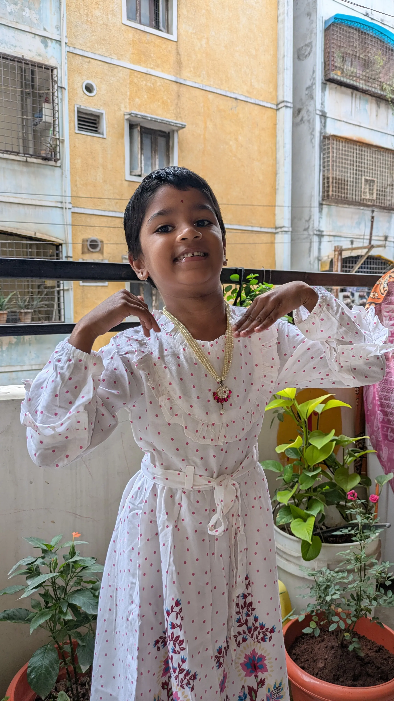
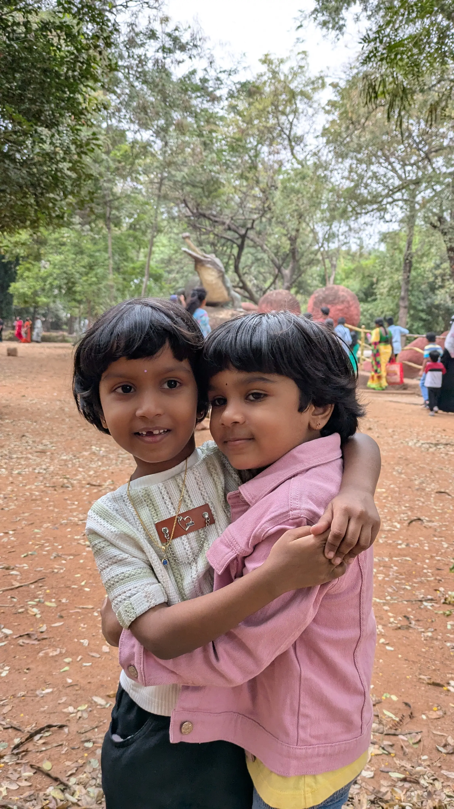

Boyapati Sivaiah
Boyapati Sivaiah is an Indian Cloud Infrastructure Specialist and Systems Architect based in Hyderabad, Telangana. With extensive experience in multi-cloud engineering, automation, and container orchestration, his technical focus spans AWS, Microsoft Azure, Kubernetes management, and enterprise infrastructure reliability.
He oversees production cloud services, CI/CD automation pipelines, zero-downtime cluster upgrades, and enterprise identity systems, alongside maintaining high-performance personal digital web platforms.
Quick Facts
1. Biography & Education
Boyapati Sivaiah earned his Bachelor of Technology (B.Tech) in Electrical and Electronics Engineering from Tenali Engineering College, affiliated with Jawaharlal Nehru Technological University (JNTUK).
Following his academic foundation, he transitioned into enterprise telecommunications and IT infrastructure engineering, specializing in enterprise directory services, distributed server environments, and enterprise identity access management.
2. Cloud & Technical Architecture
Core architectural specializations include infrastructure as code (IaC), zero-trust access control, and distributed computing:
Key Engineering Competencies:
- Container Platforms: Version upgrade cycles, node-group scaling, and vulnerability patch remediation across Amazon EKS and Azure AKS clusters.
- Automated Systems: End-to-end execution of Systems Manager (SSM) runbooks, automated Active Directory domain resets, and configuration baselines.
- Web Optimization: Low-latency client-side security implementations utilizing browser-native Web Crypto APIs (SHA-256) and optimized asset pipelines.
3. Career & Key Milestones
- Cloud & Systems Architecture: Longstanding career delivering core infrastructure services, high-availability multi-cloud designs, and observability for global enterprise systems.
- Automation Implementations: Designed and implemented zero-cost, self-service password reset architectures and PowerShell domain controller automations.
- Decade Work Anniversary: Commemorated a major 10-year organizational career milestone celebrating continuous technology transformation and operational excellence.
-
Static Web Engine Architecture: Authored and released the
boyapati5335.github.ioportal using pure client-side glassmorphism aesthetics, image preloading, and dynamic responsive frames.
4. Personal Highlights & Media
Featured highlights, visual records, and active personal development pursuits:



Outside of enterprise cloud architecture, ongoing interests include digital media production, high-value sustainable agriculture models, and daily physical wellness habits (maintaining an active 5,000-step daily goal).